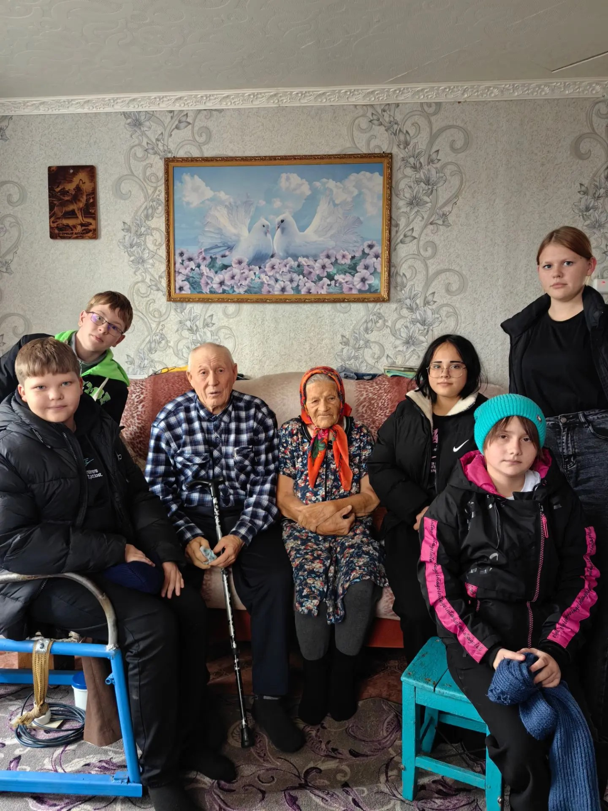

«Голоса истории»
МузейИсследованиеНедавно активисты школьного музея совершили поездку в деревню Стеклянка — место с богатой и живой историей. Для ребят это стало настоящим путешествием во времени: они не просто увидели знакомые по рассказам места, а прикоснулись к памяти поколений.
Главной целью поездки было собрать живые свидетельства прошлого — услышать рассказы старожилов деревни, сохранить их воспоминания для школьного архива и будущих экспозиций. И эта цель полностью оправдалась.
Особую ценность встрече придал разговор с Петром Петровичем Келлером — одним из тех, кто знает Стеклянку до мельчайших деталей, помнит её традиции и людей. Его рассказы наполнили сухие факты теплом и личным отношением: он делился историями о быте деревенских жителей, о труде и праздниках, о переменах, которые деревня переживала в разные годы. Ребята слушали, не пропуская ни слова, и старательно записывали каждую деталь — ведь именно такие воспоминания становятся настоящей летописью малой родины.
Для музейного актива эта поездка — не просто экскурсия, а важная исследовательская работа. Теперь в фондах появятся новые свидетельства: голоса тех, кто своими глазами видел, как менялась Стеклянка, как жили и трудились её жители. Эти рассказы станут частью будущих выставок и уроков, помогут другим школьникам почувствовать связь времён и понять, насколько ценен опыт старшего поколения.
Поездка в Стеклянку ещё раз показала: история живёт не только в учебниках и документах, но и в памяти людей. А задача юных хранителей истории — бережно собирать и передавать эти знания дальше.
